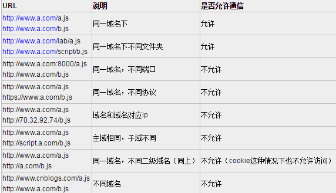

前端解决跨域问题
参考web技术文档
 特别注意两点： 第一，如果是协议和端口造成的跨域问题“前台”是无能为力的， 第二：在跨域问题上，域仅仅是通过“URL的首部”来识别而不会去尝试判断相同的ip地址对应着两个域或两个域是否在同一个ip上。 “URL的首部”指window.location.protocol +window.location.host，也可以理解为“Domains, protocols and ports must match”。
只有在主域相同的时候才能使用 1) 在www.a.com/a.html中：
document.domain = 'a.com';
var ifr = document.createElement('iframe');
ifr.src = 'http://www.script.a.com/b.html';
ifr.display = none;
document.body.appendChild(ifr);
ifr.onload = function(){
var doc = ifr.contentDocument || ifr.contentWindow.document;
//在这里操作doc，也就是b.html
ifr.onload = null;
};
2) 在www.script.a.com/b.html中：
document.domain = 'a.com';
因为script标签不受同源策略的限制。
function loadScript(url, func) {
var head = document.head || document.getElementByTagName('head')[0];
var script = document.createElement('script');
script.src = url;
script.onload = script.onreadystatechange = function(){
if(!this.readyState || this.readyState=='loaded' || this.readyState=='complete'){
func();
script.onload = script.onreadystatechange = null;
}
};
head.insertBefore(script, 0);
}
window.baidu = {
sug: function(data){
console.log(data);
}
}
loadScript('http://suggestion.baidu.com/su?wd=w',function(){console.log('loaded')});
//我们请求的内容在哪里？
//我们可以在chorme调试面板的source中看到script引入的内容
原理是利用location.hash来进行传值。
假设域名a.com下的文件cs1.html要和cnblogs.com域名下的cs2.html传递信息。
1) cs1.html首先创建自动创建一个隐藏的iframe，iframe的src指向cnblogs.com域名下的cs2.html页面
2) cs2.html响应请求后再将通过修改cs1.html的hash值来传递数据
3) 同时在cs1.html上加一个定时器，隔一段时间来判断location.hash的值有没有变化，一旦有变化则获取获取hash值
注：由于两个页面不在同一个域下IE、Chrome不允许修改
先是a.com下的文件cs1.html文件：
function startRequest(){
var ifr = document.createElement('iframe');
ifr.style.display = 'none';
ifr.src = 'http://www.cnblogs.com/lab/cscript/cs2.html#paramdo';
document.body.appendChild(ifr);
}
function checkHash() {
try {
var data = location.hash ? location.hash.substring(1) : '';
if (console.log) {
console.log('Now the data is '+data);
}
} catch(e) {};
}
setInterval(checkHash, 2000);
cnblogs.com域名下的cs2.html:
/模拟一个简单的参数处理操作
switch(location.hash){
case '#paramdo':
callBack();
break;
case '#paramset':
//do something……
break;
}
function callBack(){
try {
parent.location.hash = 'somedata';
} catch (e) {
// ie、chrome的安全机制无法修改parent.location.hash，
// 所以要利用一个中间的cnblogs域下的代理iframe
var ifrproxy = document.createElement('iframe');
ifrproxy.style.display = 'none';
ifrproxy.src = 'http://a.com/test/cscript/cs3.html#somedata'; // 注意该文件在"a.com"域下
document.body.appendChild(ifrproxy);
}
}
a.com下的域名cs3.html
//因为parent.parent和自身属于同一个域，所以可以改变其location.hash的值
parent.parent.location.hash = self.location.hash.substring(1);
window.name 的美妙之处：name 值在不同的页面（甚至不同域名）加载后依旧存在，并且可以支持非常长的 name 值（2MB）。 1) 创建a.com/cs1.html 2) 创建a.com/proxy.html，并加入如下代码
function proxy(url, func){
var isFirst = true,
ifr = document.createElement('iframe'),
loadFunc = function(){
if(isFirst){
ifr.contentWindow.location = 'http://a.com/cs1.html';
isFirst = false;
}else{
func(ifr.contentWindow.name);
ifr.contentWindow.close();
document.body.removeChild(ifr);
ifr.src = '';
ifr = null;
}
};
ifr.src = url;
ifr.style.display = 'none';
if(ifr.attachEvent) ifr.attachEvent('onload', loadFunc);
else ifr.onload = loadFunc;
document.body.appendChild(iframe);
}
proxy('http://www.baidu.com/', function(data){
console.log(data);
});
3 在b.com/cs1.html中包含：
window.name = '要传送的内容';
1) a.com/index.html中的代码：
<iframe id="ifr" src="b.com/index.html"></iframe>
<script type="text/javascript">
window.onload = function() {
var ifr = document.getElementById('ifr');
var targetOrigin = 'http://b.com'; // 若写成'http://b.com/c/proxy.html'效果一样
// 若写成'http://c.com'就不会执行postMessage了
ifr.contentWindow.postMessage('I was there!', targetOrigin);
};
</script>
2) b.com/index.html中的代码：
window.addEventListener('message', function(event){
// 通过origin属性判断消息来源地址
if (event.origin == 'http://a.com') {
alert(event.data); // 弹出"I was there!"
alert(event.source); // 对a.com、index.html中window对象的引用
// 但由于同源策略，这里event.source不可以访问window对象
}
}, false);
JSONP包含两部分：回调函数和数据。 回调函数是当响应到来时要放在当前页面被调用的函数。 数据就是传入回调函数中的json数据，也就是回调函数的参数了。
function handleResponse(response){
console.log('The responsed data is: '+response.data);
}
var script = document.createElement('script');
script.src = 'http://www.baidu.com/json/?callback=handleResponse';
document.body.insertBefore(script, document.body.firstChild);
//原理如下：
//当我们通过script标签请求时
//后台就会根据相应的参数(json,handleResponse)
//来生成相应的json数据(handleResponse({"data": "zhe"}))
//最后这个返回的json数据(代码)就会被放在当前js文件中被执行
//至此跨域通信完成
jsonp虽然很简单，但是有如下缺点：
1）安全问题(请求代码中可能存在安全隐患)
2）要确定jsonp请求是否失败并不容易